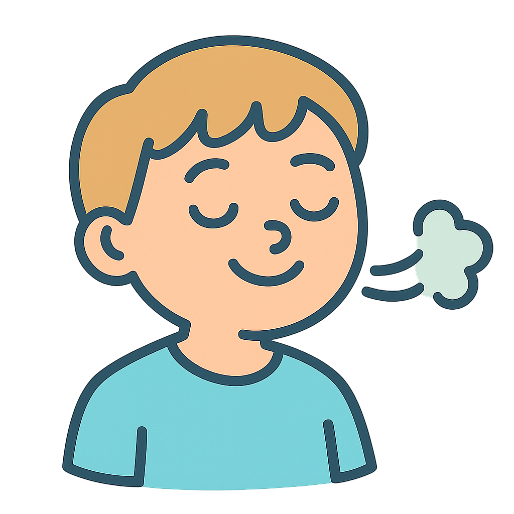
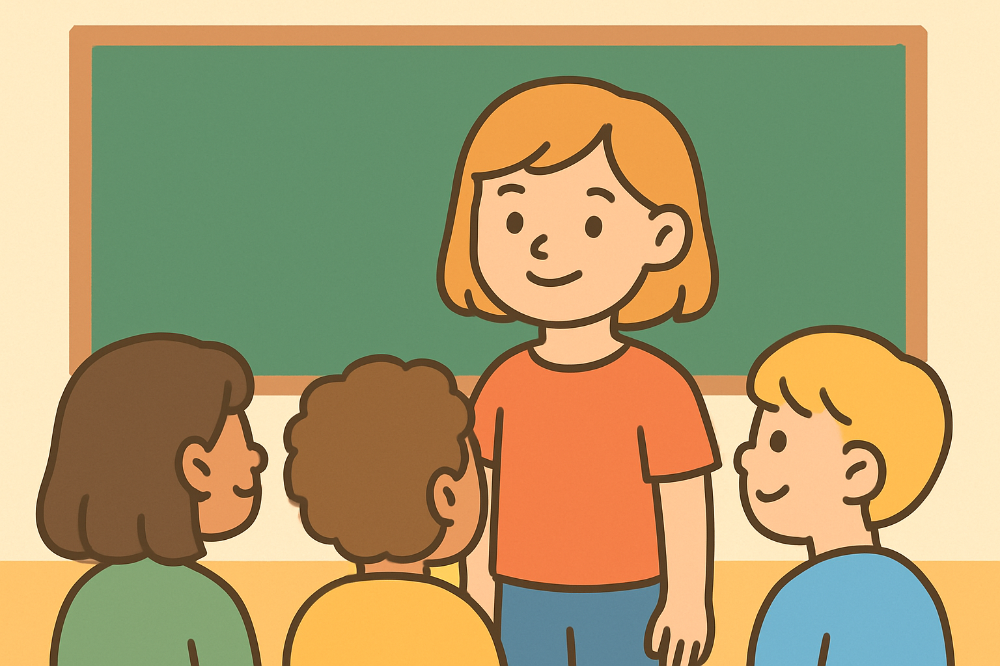

Добро пожаловать на наш сайт, посвященный проблеме страха учеников 3 класса отвечать перед одноклассниками. Здесь мы собираем полезные ресурсы, советы и методы, которые помогут детям преодолеть свои страхи и стать более уверенными в себе. Наша цель — создать поддерживающую среду, где каждый ученик сможет развивать свои навыки и уверенность, а также научиться справляться с волнением.
Здесь мы оставим подсказки для молодых учителей начальных классов, а также для студентов педагогических колледжей и университетов, которые сталкивались или столкнуться в будущем с проблемой, что определенное количество учеников 3 класса испытывают страх отвечать перед одноклассниками.
Полезные Советы

Совет №1: Дышите Глубже
Перед ответом сделайте несколько глубоких вдохов. Это поможет успокоиться и собраться с мыслями.
Как побороть страх публичных выступлений: Первые шаги и техники дыхания
| Категория: Советы детям

Страх выступать перед классом — это очень распространенное явление, особенно в младших классах. Важно понимать, что это нормально, и многие успешные люди когда-то испытывали подобные чувства. Первый шаг к преодолению этого страха — признать его и захотеть с ним поработать.
Дыхательные упражнения – один из самых простых и эффективных способов быстро успокоиться. Когда мы волнуемся, наше дыхание становится частым и поверхностным. Глубокое, размеренное дыхание, наоборот, посылает сигнал мозгу, что все в порядке. Попробуйте "квадратное дыхание": вдох на 4 счета, задержка на 4 счета, выдох на 4 счета, задержка на 4 счета. Повторите несколько раз перед выходом к доске.
Начните с малого. Попробуйте рассказать о чем-то интересном одному или двум близким друзьям или членам семьи. Выберите тему, которая вам действительно нравится и в которой вы хорошо разбираетесь. Это поможет вам почувствовать себя увереннее. Обратите внимание на свою позу, голос и зрительный контакт, даже в такой небольшой аудитории.
Еще один важный момент — это подготовка. Чем лучше вы знаете материал, тем меньше поводов для волнения. Разбейте свое выступление на небольшие части, составьте план. Вы можете даже записать себя на видео, чтобы посмотреть со стороны и отметить моменты, которые можно улучшить. Помните, каждый маленький шаг вперед — это уже победа!
Роль поддержки родителей и учителей в развитии уверенности ребенка при подготовке к ответам
| Категория: Для родителей и учителей
Поддержка со стороны взрослых играет ключевую роль в том, как ребенок справляется со своими страхами, включая боязнь публичных выступлений. Важно создать дома и в школе атмосферу доверия и принятия, где ребенок не будет бояться ошибаться. Позитивное подкрепление и акцент на усилиях, а не только на результате, творят чудеса.
Конкретные шаги для родителей и учителей:
Поощряйте любые попытки ребенка выступить, даже если они неидеальны. Хвалите за смелость и усилия.
Обсуждайте с ребенком его чувства, помогайте ему анализировать причины волнения и находить способы его уменьшения.
Практикуйте выступления в игровой форме. Пусть ребенок будет "учителем" для своих игрушек или для вас.
Помогите с подготовкой материала: разбить на части, выделить главное, подготовить наглядные пособия (если уместно).
Учителя могут использовать групповые проекты, где каждый вносит свой небольшой вклад в общее выступление, постепенно увеличивая сложность индивидуальных задач.
Помните, что ваша вера в ребенка — это мощнейший стимул для него. Создавайте ситуации успеха, отмечайте его достижения, и постепенно он научится верить в свои силы и спокойнее относиться к выступлениям перед аудиторией.
Начинаем с малого: как постепенно привыкнуть к выступлениям
| Категория: Практические советы
Идея "начать с малого" является фундаментальной в преодолении любых страхов. Вместо того чтобы сразу бросаться в "бой" с большим и сложным выступлением, лучше разбить путь на управляемые этапы. Это снижает тревожность и позволяет накапливать положительный опыт.
Примеры маленьких шагов:
Ответ с места: Начните с коротких ответов или комментариев с места, не выходя к доске.
Выступление перед зеркалом: Проговорите свой ответ или небольшой рассказ, глядя на себя в зеркало. Это поможет отследить мимику и жесты.
Выступление перед семьей или близким другом: Это самая безопасная аудитория, которая всегда поддержит.
Ответ в маленькой группе: Если в классе есть групповая работа, активно участвуйте в обсуждениях и презентации результатов от группы.
Короткое сообщение у доски: Попросите учителя дать вам возможность сделать очень короткое сообщение на хорошо знакомую тему.
Каждый такой шаг, даже самый маленький, будет укреплять вашу уверенность. Хвалите себя за каждую попытку! Со временем вы заметите, что волнение становится все меньше, а желание поделиться своими мыслями — все больше.
Что о нас говорят
"Этот сайт стал настоящей находкой! Мой сын очень боялся отвечать у доски, но благодаря советам и упражнениям отсюда, он стал гораздо увереннее. Спасибо большое создателям!"
- Иванова Мария
Мама ученика 3 "А" класса
"Как учитель начальных классов, я часто сталкиваюсь с проблемой страха у детей перед публичными ответами. Ресурсы на этом сайте очень помогли мне в работе, предложили свежие идеи и подходы. Рекомендую коллегам!"
- Петров Сергей
Учитель начальных классов, стаж 12 лет
"Сначала я думал, что это просто еще один сайт. Но тут реально полезные советы! Я попробовал дыхательные упражнения, и мне стало легче отвечать. И игры прикольные."